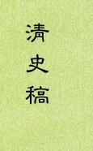

| 历史史籍 > |
| 清史稿 |
| 作者：赵尔巽 主编 |
|
清史稿，纪传体断代史，本纪25卷、志142卷、表53卷、列传316卷，共536卷。民国初年由北洋政府设馆编修，是“清史”的未定稿。记载上起1616年清太祖努尔哈赤在赫图阿拉建国称汗，下至1912年清朝灭亡，共296年的历史。 “清史”自1914年设立清史馆起，编修工作历时十四年，先后参加编写的有柯劭忞等一百多人。至1927年，主编赵尔巽见全稿已初步成形，担心时局多变而自己时日无多，遂决定以《清史稿》之名将各卷刊印出版，以示其为未定本。赵尔巽在《发刊缀言》中指出，本书是“作为史稿披露”的“急救之章”，并非视为成书。 《清史稿》作为半成品，除了繁简失当、人名地名等错误较多外，最令人诟病的是，一部民国设馆编修的书，编者却基本还是站在清王朝的立场上。但《清史稿》本身史料丰富，其价值仍不可忽视。 [2019-2-24，重新整理] |
 |